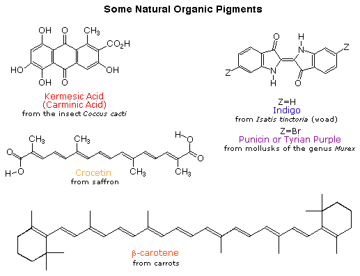

Substances appear to be of a particular color because its molecular constituents are constantly emitting the light with a frequency corresponding to that color. Dyes have very strong colors and have been used as coloring agents for clothes, food etc. Extensively conjugated organic molecules have been used as dyes from ubiquity and have their characteristic color corresponding the the transition between electronic levels. Typically, the electronic transitions require very high energy and hence fall in far UV region. However, in conjugated organic molecules, due to the extensive delocalization of the pi-electrons in the molecule, the energies (and frequencies) of these transition are lowered to near-UV and for some molecules to visible region. Such organic molecules (pigments) have color associated with this electronic transition. Shown below are some organic pigments and their structure.

Given a chemical structure, using Electronic Structure Theory, the energy levels and hence the energies of transition between them and hence the color of the molecule can be calculated. However, such a Quantum Mechanical calculation is computationally expensive. On the other hand, the aim is to typically extract some structural information from the spectra of a molecule of unknown structure. So a full Quantum Mechanical treatment is often not possible or at best uninformative. The typical strategy used is to keep in mind some structural feature and use the data from the spectra as input into an appropriate ''model'' for which the energy levels and hence the spectra can be approximated to the experimental spectra, and obtain all other extractable structural parameters.
For conjugated organic molecules, particle in a box model, which is one of the elementary model in quantum mechanics particle in a box model is very suitable because: (a) the conjugated pi-electrons are completely delocalised over the whole conjugated chain (b) there is a clear separation of the energy levels corresponding to the conjugated pi-system and rest of the molecule (ex: sigma bonds) (c) since the transitions corresponding to the conjugated pi-cloud are expected to be of the lowest energy transitions possible in these molecule.

Given a chemical structure, using Electronic Structure Theory, the energy levels and hence the energies of transition between them and hence the color of the molecule can be calculated. However, such a Quantum Mechanical calculation is computationally expensive. On the other hand, the aim is to typically extract some structural information from the spectra of a molecule of unknown structure. So a full Quantum Mechanical treatment is often not possible or at best uninformative. The typical strategy used is to keep in mind some structural feature and use the data from the spectra as input into an appropriate ''model'' for which the energy levels and hence the spectra can be approximated to the experimental spectra, and obtain all other extractable structural parameters.
For conjugated organic molecules, particle in a box model, which is one of the elementary model in quantum mechanics particle in a box model is very suitable because: (a) the conjugated pi-electrons are completely delocalised over the whole conjugated chain (b) there is a clear separation of the energy levels corresponding to the conjugated pi-system and rest of the molecule (ex: sigma bonds) (c) since the transitions corresponding to the conjugated pi-cloud are expected to be of the lowest energy transitions possible in these molecule.
For the particle of mass \(m\), in 1-dimensional box of length \(m\),
the energy levels are
quantized and are given in terms of the quantum number \(n\) as:
$$E_n = \frac{n^2 h^2}{8mL^2} $$
where \(h\) is the Planck Constant, and \(n = 1, 2, 3, \dots\)
The aufbau principle determines the order in which these energy levels are filled and the Pauli exclusion principle restricts the number of electrons in a energy level to two. These two rules are sufficient to fill the conjugate pi-electrons in the available 1-d particle in a box energy levels and determine the highest occupied energy level (called Highest Occupied Molecular Orbital, HOMO) and the lowest unoccupied energy level (called Lowest Unoccupied Molecular Orbital, LUMO). The lowest energy transition from the UV-Visible Spectra is associated to the transition energy of HOMO to LUMO transition for the electron.
The total length of the conjugated part of the molecule is determined by using the model. From the structure of the molecule, the number of number of conjugated double bonds is known. Combining the above data provides an estimate of the the average double bond length, as calculated by application of "particle in a box" model.

Using the data from the UV-Visible spectra of conjugated organic molecules, and using the results of the particle in a box model, obtain the typical double bond length in these molecules.


From the list of conjugated molecules given:
- Select one molecule from the list, to perform the experiment
- Identify the atoms involved in conjugation
- Identify the number of double bonds involved in conjugation
- Fill up the energy levels with the electrons involved in conjugation,
and identify the HOMO and LUMO, and hence the transition.
- Identify the appropriate formula to determine the length of conjugated part of the molecule using this energy this transition.
- From the calculated length of conjugated part, identify the appropriate formula for the calculation of single double bond length
- Note the calculated double bond length.
Repeat the above steps for every molecule in the list.


- Aufbau Principle: Wikipedia article at http://en.wikipedia.org/wiki/Aufbau_principle
- Pauli's Exclusion Principle: Wikipedia article at http://en.wikipedia.org/wiki/Pauli_exclusion_principle
- Particle in a box model in quantum mechanics: Wikipedia article at http://en.wikipedia.org/wiki/Particle_in_a_box
- "Physical Chemistry" PAW Atkins, 8th Edition.
- Illustration 9.1 "Accounting for electronc absorption spectra of polyenes"
- Problem 9.31. On \(\beta\)-carotene spectrum
- Page 398: ab intio calculation of electronic structure of a few conjugated molecules